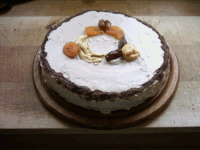
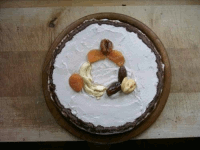
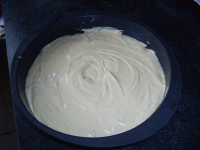
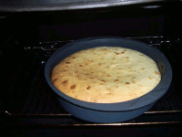
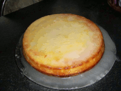
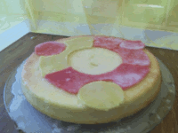

Ubuntu Kuchen
Da das geistige Wohl durch die Benutzung von Ubuntu schon gestärkt wird, soll in diesem Artikel die Grundlage für das körperliche Wohl gelegt werden. Denn wie jeder weiß, hält Essen Leib und Seele zusammen. Darum bleibt hier nur noch zu sagen: Viel Spaß beim Ausprobieren und guten Appetit! 
Ubuntu-Kuchen 0.1¶
|  |
| Ubuntu-Kuchen 0.1 |
|  |
| Das Logo von oben |
Dieses Kuchen-Rezept ist aus einer netten Diskussion im Forum entnommen und steht unter der General Baking License (GBL). Für eine Springform mit 24 cm Durchmesser.
Quellcode-Repository¶
4 Eier
4 EL Wasser
4 EL Apfel- oder Birnensaft
1 Prise Salz
Eier trennen und die Eigelbe mit den restlichen Zutaten mit einem Handrührgerät verquirlen, bis alles schaumig ist.
Zubereitung¶
200 g flüssigen Honig zugeben und ebenfalls verrühren
100 g fein gemahlenes Dinkel- oder Weizenmehl (am besten frisch gemahlen)
1 ½ TL Backpulver dazugeben und mit verrühren
200 g Karotten (heißen auch Möhren oder Gelbe Rüben) putzen und mittelfein reiben, die Karotten dürfen nicht musig werden
200 g Haselnusskerne gerieben oder geraspelt zum restlichen Teig dazu und verrühren
Die Springform mit Butter einfetten und mit Mehl einstäuben (der Kuchen löst sich dann besser)
Eiweiße steif schlagen und den Eischnee vorsichtig unterziehen
Den Teig in die Form füllen und auf der mittleren Schiene im Backofen bei 180° etwa 50 Minuten backen lassen
Verzierung¶
200 ml Sahne mit
1 Päckchen Vanillezucker
1 EL Kakaopulver steif schlagen und den abgekühlten Kuchen damit rundherum bestreichen
Mit Trockenobst das Ubuntu-Logo legen
Für die Farbauswahl zum Beispiel mit Aprikosen, Datteln und Apfelringen
Kakaopulver mittels eines kleinen Löffels oder Messers als Rand draufstreuen
Wir empfehlen statt des üblichen (Milch)Kaffees einen originalen südafrikanischen Rooibusch-Tee ... und wünschen dann einen guten Appetit! 
Ubuntu-Rührkuchen¶
|  |
| Der fertige Teig... |
|  |
| Nach dem Backen |
|  |
| Fast fertig |
|  |
| mmmh, lecker |
Teig¶
Quellcode-Repository¶
250g Butter
175g Zucker
1 Päckchen Vanillin-Zucker
6 Eier
1 Tütchen Zitronensäure oder ein paar Spritzer Zitronensaft
250g Mehl
1/2 Päckchen Backpulver
Zubereitung¶
Alles der Reihe nach vermengen und zwischendurch immer wieder durchmixen
in eine Backform geben und gleichmäßig verteilen (siehe Abbildung)
Ofen auf 180°C vorheizen und backen bis die Oberfläche goldbraun (siehe Abbildung) ist.
Zuckerguss¶
Je nach Geschmack beliebig viel Puderzucker mit Zitronen-/Orangensaft verrühren und über den Kuchen gießen. Trocknen lassen.
Links¶
Dieses und ein weiteres Rezept sind inzwischen auch im Internet zu finden:
Gourmet Rezept Manager - Rezeptverwaltung
Aufgekocht! - Von Spaghetti-Code, Forks und Slices
 - Artikel LinuxUser, 01/2011
- Artikel LinuxUser, 01/2011Das Netz-Kochbuch
- Die Rezepte-Sammlung der Unix-AG, Technische Universität Kaiserslautern
- Erstellt mit Inyoka
-
 2004 – 2017 ubuntuusers.de • Einige Rechte vorbehalten
2004 – 2017 ubuntuusers.de • Einige Rechte vorbehalten
Lizenz • Kontakt • Datenschutz • Impressum • Serverstatus -
Serverhousing gespendet von